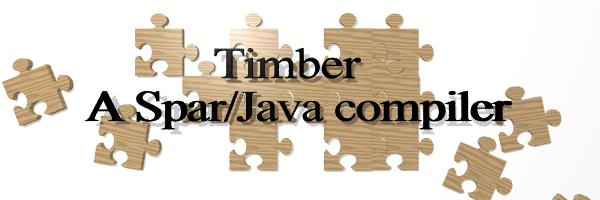

The Timber compiler is a parallelizing static compiler for a superset of Java.
The Timber compiler has been developed to demonstrate, and experiment with, compilation techniques for parallel and distributed systems. Our research concentrates on annotation-based parallel programming, so that is what the compiler supports. To provide a realistic context for parallelization engines, sufficient optimizations for sequential programs have been implemented to achieve a respectable level of performance for sequential programs.
The compiler implements most of Java, plus a set of additional language constructs for scientific programming. This set of extensions is called Spar. We only fundamentally deviate from the Java language specification on the following points:
.spar. For code in .java and
.jav files, the compiler behaves pretty much like an ordinary
Java compiler. In fact, for the Jacks validation
suite, we have pretty much the same score as Sun's own compiler!
The compiler is available for downloading under the Gnu Public License (GPL). See the downloading page for further details.
There are separate pages for Timber News; Publications; people; an overview of Spar; implementation and language compliance of the Timber compiler; and related websites.
The Timber compiler is a long-term project of the Parallel and Distributed Systems group of Delft University of Technology.
Last modified Wed Dec 17 18:29:55 2003 UT by Kees van Reeuwijk.